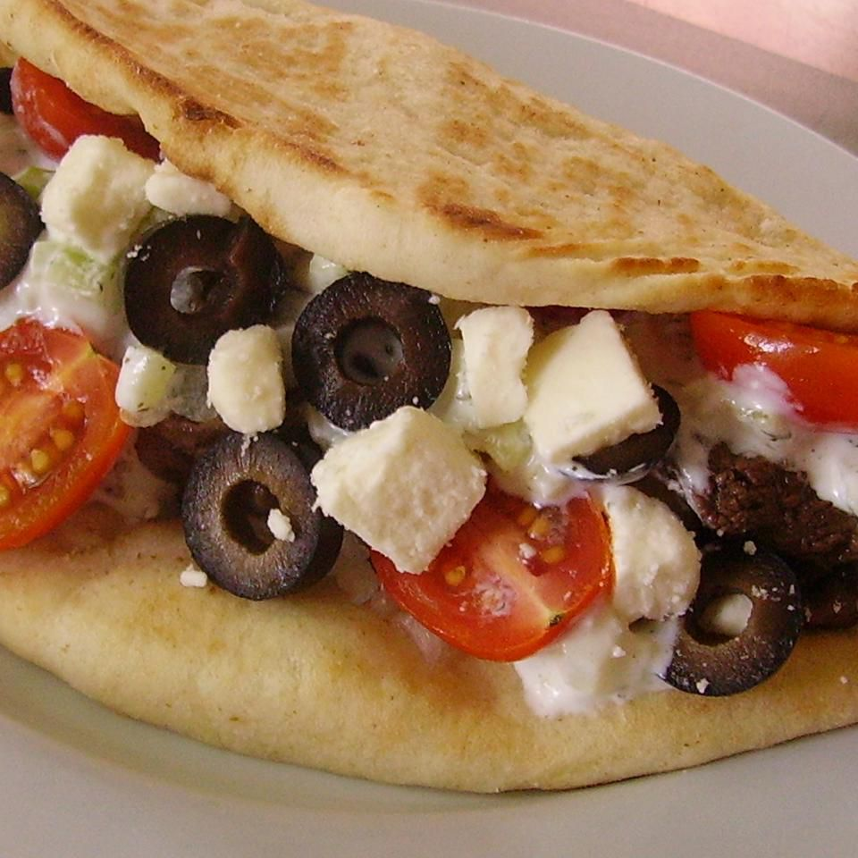

American Greek-Gyro
The Gyro is an American-Greek sandwich. Though the gyro is believed to have orignated in Greece,
most food historians agree that the name "Gyro and the sandwich known today are recent inventions
that orginated in New york. It is very similar to the döner kebeabs of turkey and shawarma of the middle
East. Today we are gonna give our own spin to this classic dish.
Ingredients
- 2(8 ounce) containers plain yogurt
- 2 cucumbers - peeled, seeded, and diced
- 3 tablespoons olive oil, diveded
- 1 Tablespoon chopped fresh dill
- 1/2 lemon, juiced
- 3 cloves garlic, peeled
- salt and gorund black pepper to taste
- 1 pound top sirloin steak, cut into thin strips
- 5 pita bread rounds
- 1 tomato, chopped
- 1/2 small onion, thinly sliced
- 1/2 cup shredded lettuce
- 1(2.25 ounce) can of sliced ripe olives, drained
Steps
- Blend yogurt, cucumbers, 2 tablespoons olive oil, dill, lemon juice,
garlic, salt and pepper in a blender until tzatziki sauce is evenly combined
- Heat remaining 1 tablespoon olive in a large skillet over medium heat; cook
and stir beef in the hot oil until no longer pink, 5-10 minutes
- Layer half of each pita with steak, tomato, onion, feta cheese, lettuce, olives,
and tzatziki sauce. Bring edge of each pita over the filling and secure with a
toothpick